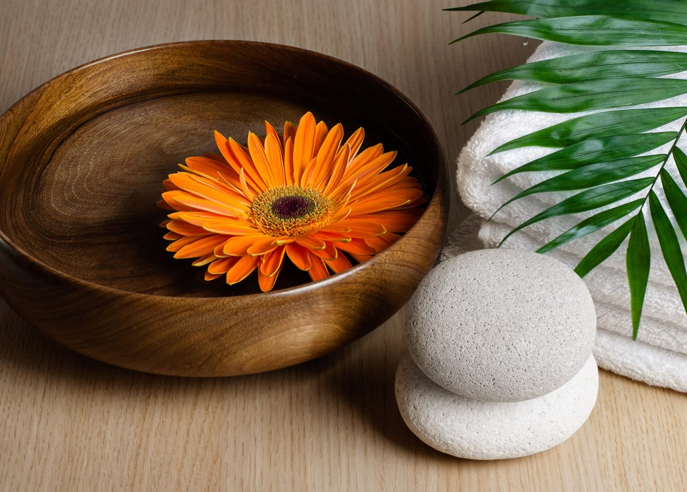

From Sole to Soul: Exploring the Wonders of Foot Reflexology

In our fast-paced, high-stress lives, it’s easy to overlook the small steps we can take toward wellness. Yet, one of the most effective ways to relieve stress, restore balance, and promote healing starts right at our feet. Foot reflexology, a practice that dates back thousands of years, offers a unique and holistic approach to health by targeting pressure points on the feet that are thought to correspond to different areas of the body. From calming the mind to relieving physical tension, reflexology offers benefits that truly reach from the sole to the soul.
What is Foot Reflexology?
Foot reflexology is based on the ancient principle that our feet mirror our entire body, with specific areas of the foot corresponding to various organs, glands, and systems. By applying targeted pressure to these reflex points, practitioners aim to stimulate the body’s natural healing processes, improve energy flow, and restore balance to body and mind. Reflexology isn’t just a foot massage—it’s a powerful, holistic therapy that supports well-being at every level.
The Origins of Reflexology: A Journey Through Time
Reflexology has roots in ancient cultures, including China, Egypt, and Native American traditions, where healers believed in the body’s energy channels and their role in health. Traditional Chinese Medicine (TCM) identifies these channels as “meridians,” which connect different organs and parts of the body. Reflexology, therefore, is not just a modern wellness trend; it’s a time-honored practice with a rich heritage in alternative medicine.
Benefits of Foot Reflexology: How It Heals from the Inside Out
The therapeutic power of foot reflexology goes far beyond relaxation. Here are some of the key benefits that make reflexology a popular choice for people seeking a natural path to well-being:
- Stress Relief and Relaxation
Foot reflexology is incredibly calming, allowing both body and mind to unwind. As specific points on the feet are massaged, reflexology promotes the release of endorphins, the body’s natural “feel-good” hormones. Many find that reflexology not only reduces stress but also enhances their overall mood and mental clarity. - Improved Circulation and Energy Flow
Reflexology encourages better blood flow and stimulates the lymphatic system, helping the body detoxify and deliver nutrients more efficiently. Improved circulation means more oxygen reaches the cells, supporting their function and giving you an overall energy boost. - Pain Management
For those dealing with chronic pain, reflexology can be a gentle yet effective pain management tool. By working on specific reflex points, this practice can ease back pain, neck tension, headaches, and more. Reflexologists believe that by activating these points, the body’s natural pain-relief mechanisms are triggered, providing a holistic, drug-free way to relieve discomfort. - Better Digestion and Enhanced Immune Function
The reflex points in the arch of the foot correspond to the digestive organs, so massaging these areas can support better digestion and alleviate issues like bloating and constipation. Regular reflexology sessions may also bolster the immune system by improving circulation and lymphatic drainage, helping the body stay strong and resilient. - Hormone Balance and Emotional Stability
Reflexology is thought to influence the endocrine system, which regulates hormones. This can be especially beneficial for individuals experiencing hormonal fluctuations, such as those associated with stress, menopause, or mood disorders. Regular sessions may help regulate mood, improve sleep, and promote emotional well-being.
How Does Reflexology Work?
Reflexologists use their thumbs, fingers, and specialized techniques to apply pressure to reflex points on the feet. Each point corresponds to an organ or area in the body, and the pressure stimulates nerves that send signals to the brain, encouraging balance and relaxation. Although each session is personalized based on individual needs, the approach is gentle, non-invasive, and calming, making it suitable for people of all ages.
Reflexology for the Soul: How It Connects Body and Mind
Beyond physical benefits, reflexology also has a profound impact on emotional health. Here’s how it nurtures the soul:
- Mindfulness and Presence: Reflexology invites you to tune into your body and be fully present. The calming rhythm of foot reflexology brings a heightened awareness of your body and breath, helping you let go of stress and connect to a state of peace.
- Self-Care and Connection: Taking time for reflexology is a form of self-care that promotes self-love and body appreciation. Feeling grounded and nurtured has a positive ripple effect on emotional health, which in turn supports physical health.
- Releasing Emotional Tension: Just as reflexology relieves physical tension, it may also help release emotional blockages. Reflexologists believe that our bodies store emotions, and by working on specific points, we can help process and release built-up emotions.
Can You Practice Reflexology at Home?
While it’s ideal to see a trained reflexologist, you can still experience some of the benefits of reflexology at home. Here are a few easy techniques to try:
- Relaxing Point: Massage the center of each foot, just below the ball, in circular motions. This area is linked to relaxation and may help ease stress.
- Energy Point: To increase focus and energy, gently press and massage the tips of the big toes, which are thought to connect to the brain and pituitary gland.
- Digestive Reflex: If you experience digestive discomfort, try massaging the arch of your foot, focusing on the mid-arch area, to stimulate reflex points related to the stomach and intestines.
Exploring Reflexology: A Path to Holistic Health
In a world where stress is an almost daily companion, foot reflexology offers a gentle, natural path to wellness that honors the connection between body, mind, and soul. Whether you’re seeking relief from chronic pain, improved energy, or simply a moment of peace, reflexology invites you to reconnect with yourself in a meaningful way.